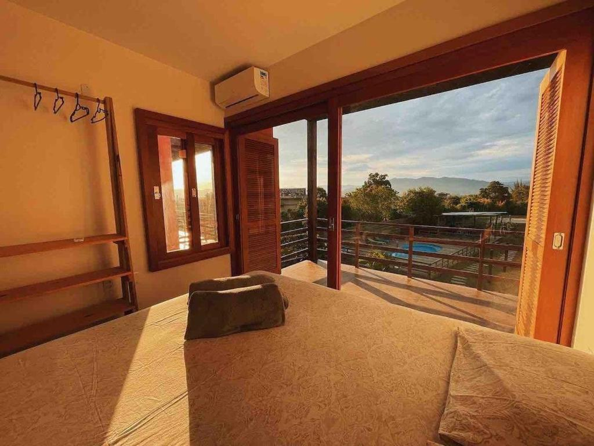
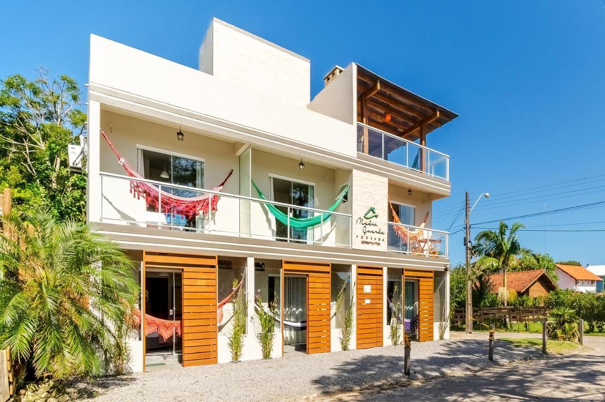
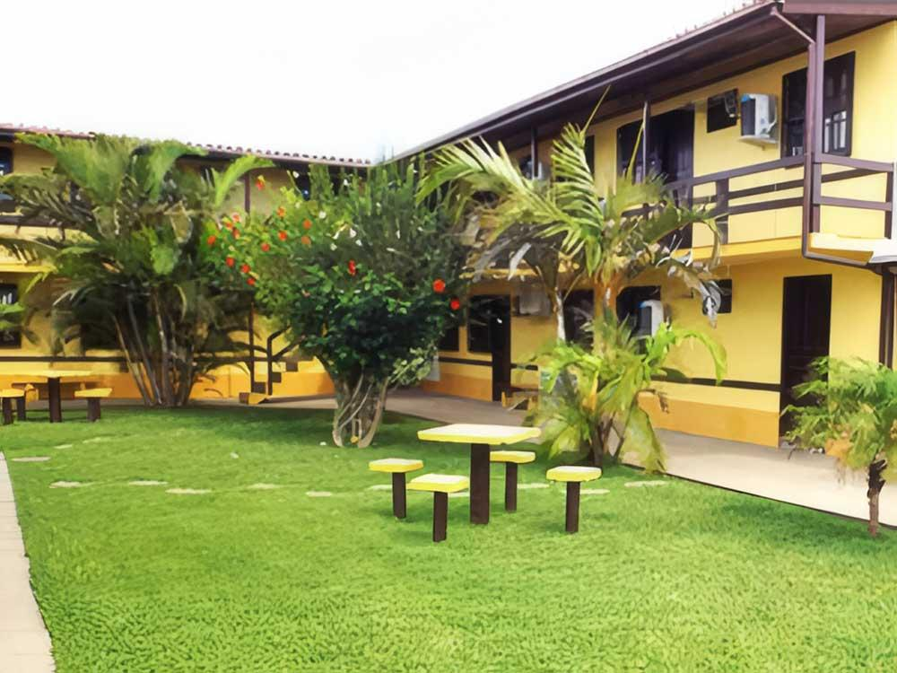

Pousadas Recomendadas
Selecionamos hospedagens que oferecem boa localização, excelente avaliação e preços compatíveis com o perfil da nossa viagem.

Nome da Pousada
Excelente opção para casais que procuram tranquilidade, boa localização e conforto sem fugir do orçamento.

Pousada Fazenda Verde
Excelente para casais que procuram tranquilidade, boa estrutura e fácil acesso às praias da região.

Pousada Morada da Guarda
Simples, confortável e ideal para quem prefere investir mais nos passeios do que na hospedagem.

Pousada Pet Friendly
Ambiente tranquilo, com boa área externa e estrutura mais confortável para quem viaja acompanhado do pet.